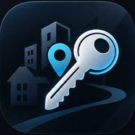

Liste wird geladen …
Gebaut ist der Teil, der ohne all das auskommt: die Suche über den echten, vollständigen Bestand.

Wer arbeitet mit dem Gerät?
Beim ersten Mal das Startpasswort eingeben — danach legst du dein eigenes fest.
Das war das Startpasswort. Bitte jetzt ein eigenes festlegen — ohne das gibt der Server die Liste nicht heraus.